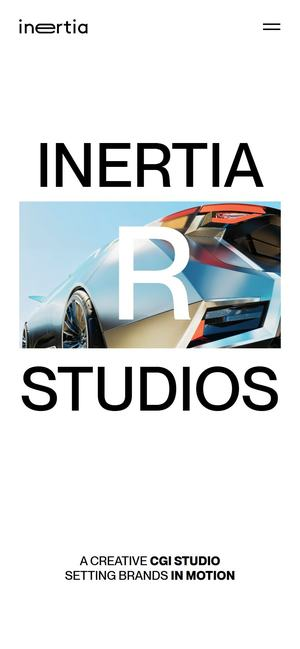
Awwwards 오늘의 사이트 · 2025.08먼저 보세요01Inertia Studios
와 포인트런던의 CGI 스튜디오 쇼케이스 사이트로, 첫 화면에 작품 영상이 크게 깔리고 설명 글은 짧게 둡니다. 영상이 곧 회사 소개가 되는 구성입니다.
다워라라면다워라 첫 화면을 '화성에 상륙해 버린 롯데리아' 같은 학생 작품 영상으로 꽉 채우고, 작품명과 과정 이름만 작게 얹습니다.
DAWERA · 메인 화면 리뉴얼 레퍼런스 보드
3D 포트폴리오 학원 메인을 바꿀 때 참고할 해외·국내 사이트 31곳을 실제 첫 화면 영상으로 모았습니다. 다워라 학생 작품으로 만든 메인 시안 3개도 바로 열어 보실 수 있습니다.
시안 3개부터 보기세 시안 모두 학원 소개·과정 5개·학생 작품·후기·자주 묻는 질문·오시는 길을 메인 화면에 글자로 펼쳤습니다. 검색 로봇과 AI가 메인 한 장만 읽어도 '사당역 3D 포트폴리오 학원'이라는 걸 알 수 있게 만든 구조입니다.
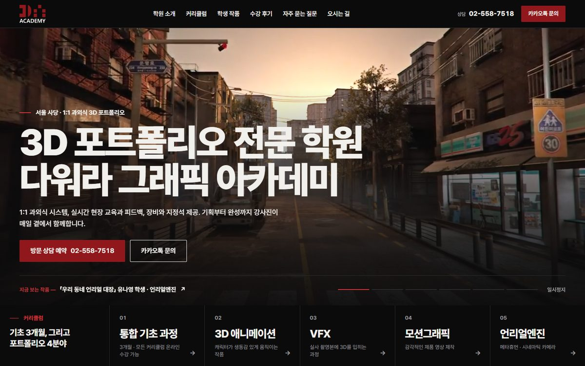
1안 · 권장들어오자마자 학생 작품 영상이 화면을 채우고, 바로 아래 과정 5개가 펼쳐집니다. 과정에 마우스를 올리면 그 과정 학생 영상으로 바뀝니다.
시안 열어보기 ↗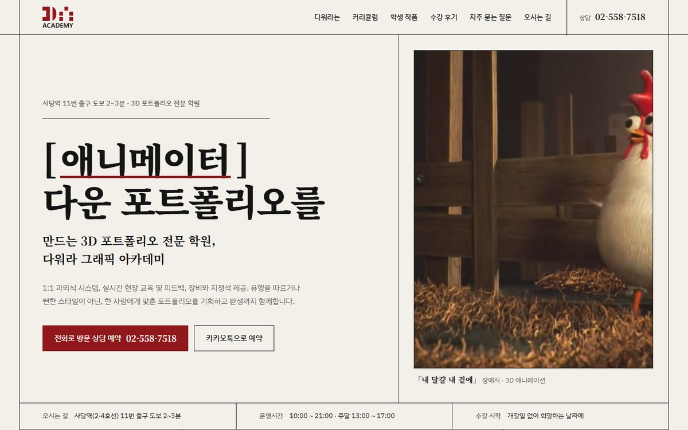
2안학원 이름을 '○○다워라'로 읽어, 큰 글자와 학생 한 명 한 명의 작품을 잡지 지면처럼 보여 줍니다. 메뉴는 메인 목차로 펼쳤습니다.
시안 열어보기 ↗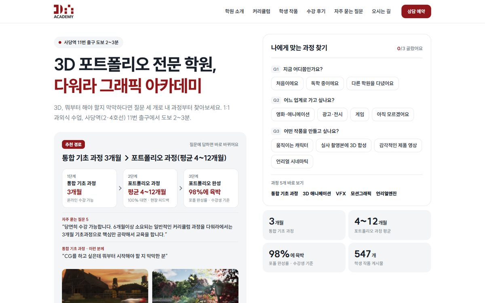
3안질문 3개에 답하면 '기초 3개월 → 어느 포트폴리오 과정'이 바로 나오고, 그 과정 학생 작품과 상담 버튼이 붙습니다. 처음 오는 비전공자를 위한 화면입니다.
시안 열어보기 ↗새 메인은 새로 찍을 필요 없이, 지금 있는 작품·영상·글로 충분히 만들 수 있습니다.
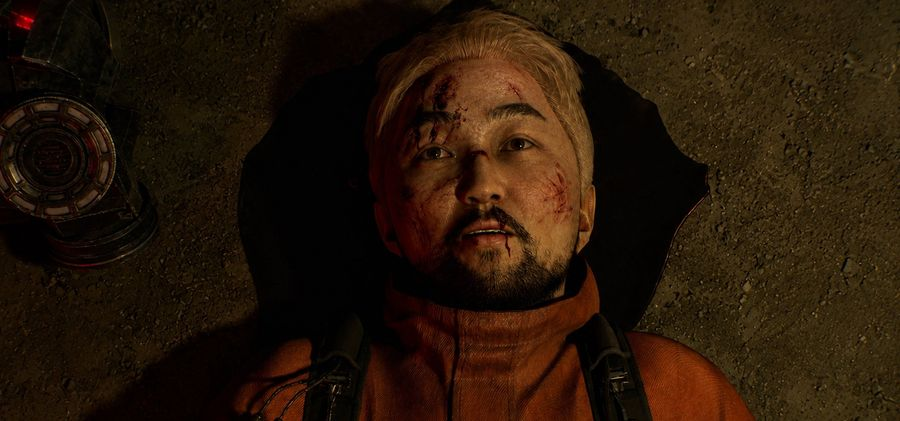
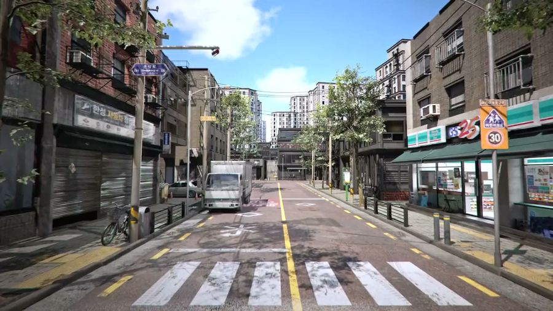
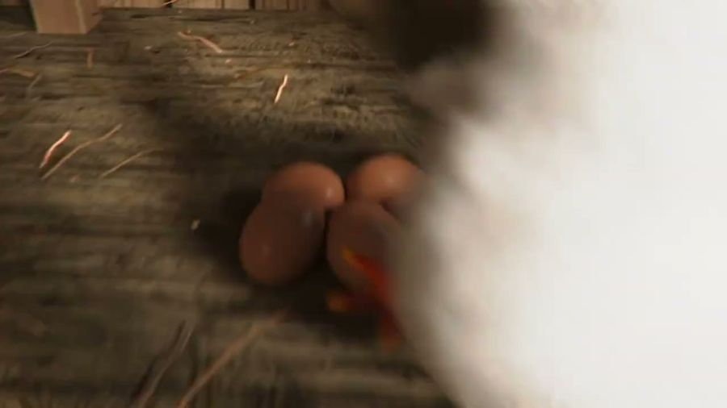
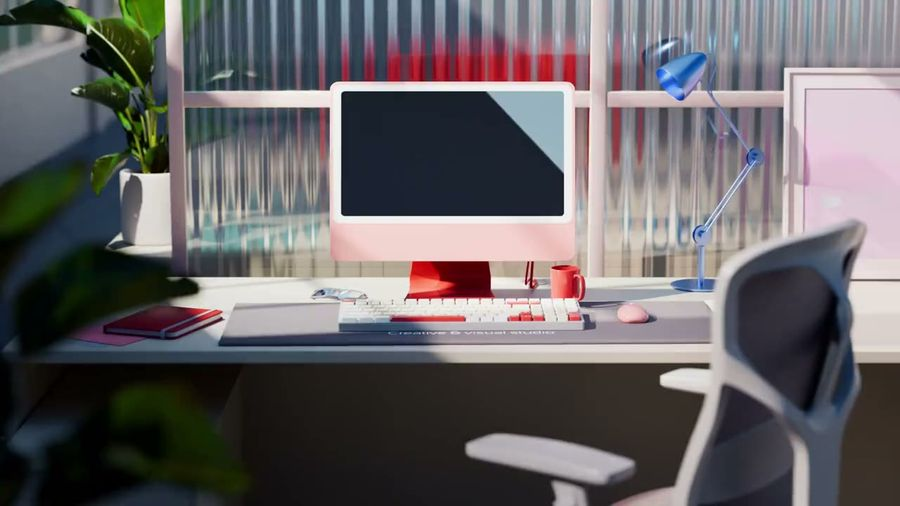
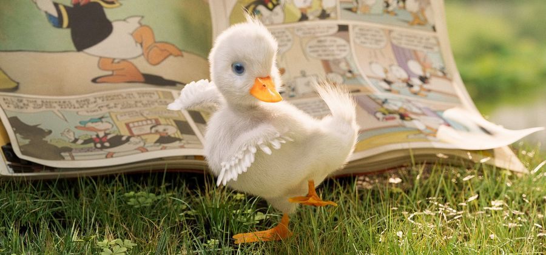
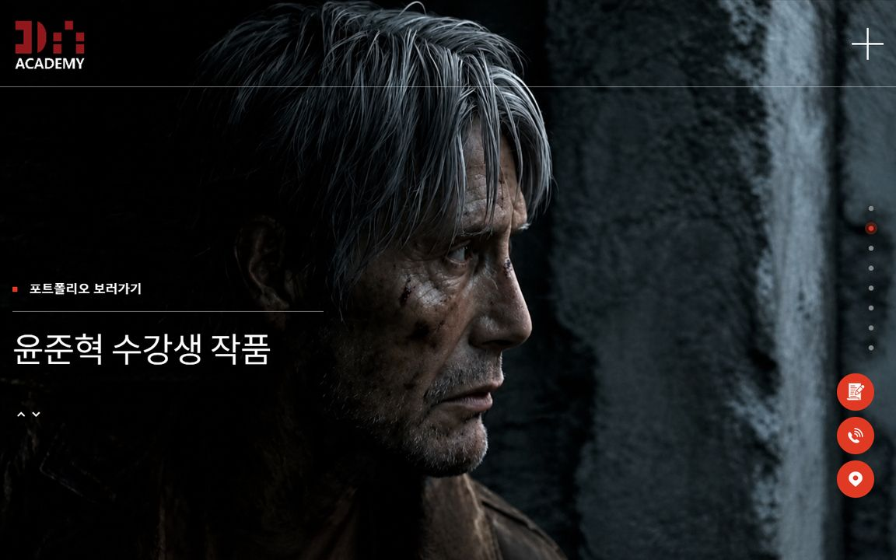
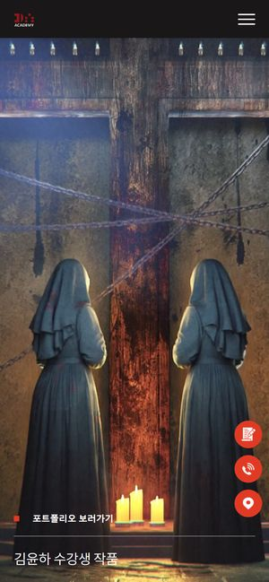
다워라 졸업생이 가고 싶어 하는 회사들이 첫 화면을 어떻게 쓰는지 보는 묶음입니다. 설명보다 작품 영상이 먼저 나와야 실력이 바로 전달된다는 근거가 됩니다.

Awwwards 오늘의 사이트 · 2025.08먼저 보세요01와 포인트런던의 CGI 스튜디오 쇼케이스 사이트로, 첫 화면에 작품 영상이 크게 깔리고 설명 글은 짧게 둡니다. 영상이 곧 회사 소개가 되는 구성입니다.
다워라라면다워라 첫 화면을 '화성에 상륙해 버린 롯데리아' 같은 학생 작품 영상으로 꽉 채우고, 작품명과 과정 이름만 작게 얹습니다.
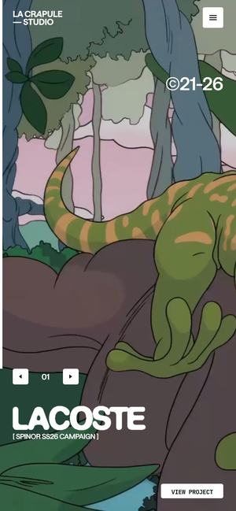
Awwwards 오늘의 사이트 · 2025.1002와 포인트파리의 CGI 스튜디오로, 이미지와 영상 작업을 화면 가득 보여 주고 부드럽게 미끄러지는 스크롤로 작품을 이어 봅니다.
다워라라면'검은 수녀들' 모션그래픽처럼 분위기가 강한 작품을 크게 걸고, 스크롤할 때마다 다음 학생 작품이 이어지게 합니다.
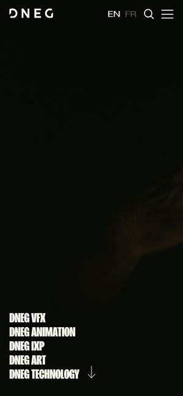
Awwwards 우수작 · 2025.0303와 포인트세계적인 VFX 스튜디오가 브랜드를 새로 단장하며 만든 사이트입니다. Awwwards 소개대로 힘 있고 역동적인 화면 전환으로 영상 작업을 보여 줍니다.
다워라라면영화 예고편 같은 힘 있는 화면 전환을 'The Hunter'(언리얼엔진)처럼 시네마틱한 학생 작품을 보여 줄 때의 기준으로 삼습니다.
와 포인트모션디자인과 애니메이션 스튜디오로, 작품 영상을 중심에 두고 부드러운 스크롤로 작업을 차례로 보여 줍니다.
다워라라면모션그래픽 과정 바로가기 칸마다 '검은 수녀들' 같은 학생 작품을 짧게 반복 재생시킵니다.
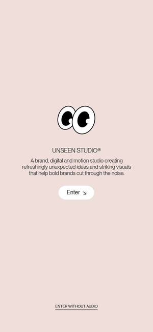
Awwwards 오늘의 사이트 · 2023.0205와 포인트WebGL로 그린 움직이는 첫 화면에 입장 버튼을 둔 스튜디오 사이트입니다. 들어가는 순간부터 화면 자체가 하나의 작품처럼 움직입니다.
다워라라면'다워라 로고 애니메이션'의 빨간 DA 큐브를 첫 입장 장면으로 쓰고, 누르면 학생 작품 쇼릴로 들어가게 합니다.
같은 업종의 수상 사례입니다. 작품을 보여 주면서도 과정·기간·지원 버튼을 첫 화면에서 바로 찾게 만든 방식이, 학원 정보가 잘 보여야 AI 검색에도 잘 걸린다는 다워라의 고민과 맞닿아 있습니다.
와 포인트애니메이션 학교 사이트를 마우스로 끌어서 둘러보는 작품 벽으로 만들었습니다. 배경에 영상이 돌고, 위쪽 메뉴에 지원·과정·졸업생·캠퍼스가 바로 보입니다.
다워라라면다워라 학생 작품 547개를 끌어서 둘러보는 벽으로 만들고, 위 메뉴에 통합 기초 과정·포트폴리오 4과정·상담 신청을 고정합니다.
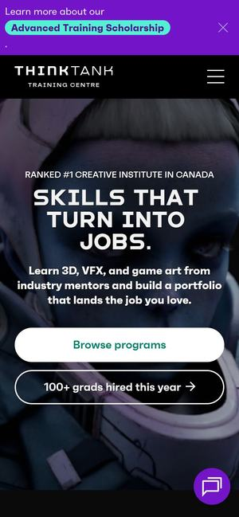
Awwwards 우수작 · 2023.0307와 포인트과정마다 기간, 필요한 실력, 학비를 한 묶음으로 정리해 메인 위쪽에 펼쳐 둡니다. 예를 들어 기초 과정은 16주, 경험이 없어도 된다고 바로 적혀 있습니다.
다워라라면다워라도 '통합 기초 3개월 · 처음이어도 가능'에서 '포트폴리오 과정 4분야'로 이어지는 순서를 같은 형식으로 한눈에 보여 줍니다.
와 포인트2년·1년·단기 과정과 디자인, 영상, 애니메이션·게임 같은 분야를 메뉴에서 바로 고르게 정리한 창작 학교 사이트입니다.
다워라라면다워라 메뉴를 기간(기초 3개월·포트폴리오)과 분야(애니메이션·VFX·모션그래픽·언리얼) 두 갈래로 나눠 바로 고르게 합니다.
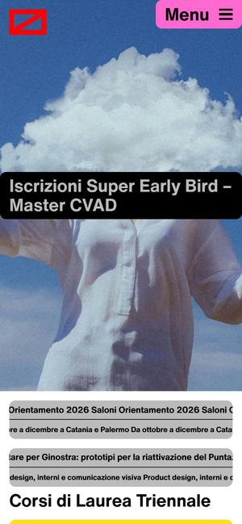
Awwwards 우수작 · 2026.0309와 포인트Awwwards 소개대로 젊은 지원자를 위해 선명한 색으로 과정, 행사, 입학 안내를 찾기 쉽게 만든 학교 사이트입니다.
다워라라면'사당역 11번 출구 도보 2~3분' 같은 위치 안내와 상담 신청을 과정 안내 바로 옆에 두는 구성으로 씁니다.
다워라 학생 작품 547개를 분야별로 보여 줄 방법을 찾는 묶음입니다. 학교와 커뮤니티가 학생 작품을 어떻게 한 권의 전시처럼 엮고, 분야별로 찾게 하는지 봅니다.
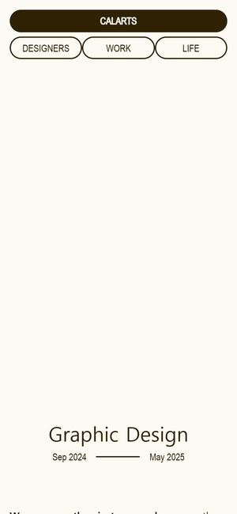
Awwwards 우수작 · 2025.07먼저 보세요10와 포인트한 해 동안 학생들이 만든 작업과 학교생활을 한 권의 연감처럼 모은 사이트입니다. 메뉴가 학생, 작업, 생활 세 갈래로 나뉘고 영상도 함께 보여 줍니다.
다워라라면'올해의 다워라' 연감처럼 학생 이름별 지면을 만들고, '내 달걀 내 곁에' 같은 작품을 한 장씩 넘겨 보게 합니다.
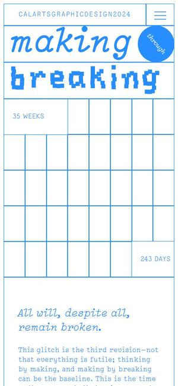
Awwwards 우수작 · 2024.0711와 포인트같은 학과가 해마다 새 디자인으로 학생 작품집 사이트를 만드는데, 2024년판도 수상했습니다. 학과 학생들의 한 해 작업을 모은 작품집입니다.
다워라라면기수별 수료생 작품집 페이지를 따로 만들어 해마다 쌓아 가는 방식으로 씁니다.
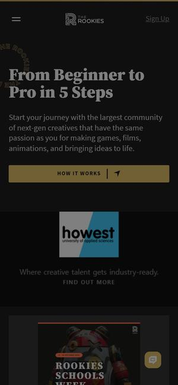
12와 포인트게임, 영화, 애니메이션을 만드는 전 세계 학생과 신인의 작품을 모으고 공모전을 여는 커뮤니티입니다. 첫 화면에 '초보에서 프로까지 5단계'라는 안내를 둡니다.
다워라라면다워라 작품 갤러리를 Asset, Lookdev, Animation, Unreal Engine, Motion Graphic 다섯 칸 필터로 나눠 같은 방식으로 보여 줍니다.
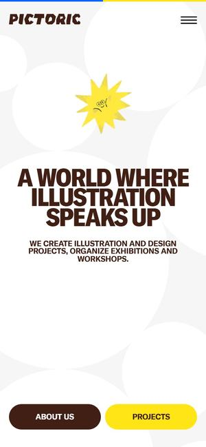
Awwwards 오늘의 사이트 · 2025.0813와 포인트일러스트 작가들의 작업을 고르고 전시와 워크숍을 여는 커뮤니티 사이트로, 첫 화면에 3D 그래픽을 쓰고 부드러운 스크롤로 작품을 이어 봅니다.
다워라라면학생 작품 카드를 전시장 벽처럼 배치하고, '경복궁 향원정 맵' 같은 대표작을 크게 띄웁니다.
3D 학원이 3D로 말하는 근거입니다. 첫 화면 한 장면만 3D로 바꿔도 '여기는 3D를 제대로 하는 곳'이라는 인상을 줄 수 있습니다.
와 포인트3D 웹 스튜디오의 자기소개 사이트로, 첫 화면이 실시간 3D 장면으로 그려지고 아래로 작업 영상이 이어집니다.
다워라라면첫 화면에 다워라 로고의 빨간 DA 큐브를 실시간 3D로 띄우고, 아래로 학생 작품 영상이 이어지게 합니다.
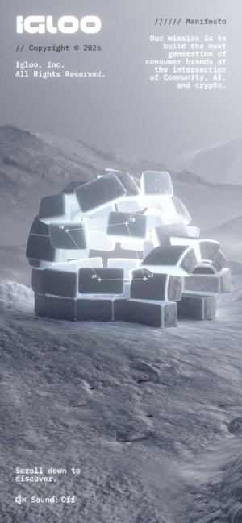
Awwwards 오늘의 사이트 · 2024.0715와 포인트Awwwards 3D·애니메이션 분류에 오른 회사 소개 사이트로, 회사 이야기를 3D 장면 중심으로 풀어냅니다.
다워라라면스크롤을 내릴 때마다 모델링, UV, 텍스처링, 라이팅, 언리얼로 이어지는 기초 과정 단계가 3D 장면으로 바뀌게 합니다.
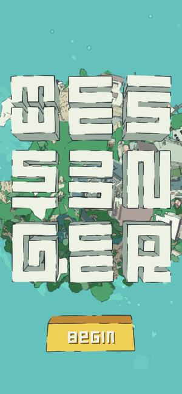
Awwwards 오늘의 사이트 · 2025.1116와 포인트작은 행성 위를 돌아다니며 배달을 하는 3D 게임을 설치 없이 웹 브라우저에서 바로 하게 만든 사이트입니다.
다워라라면'경복궁 향원정 맵'이나 GS 편의점 골목을 옮긴 '우리 동네 언리얼 대장'을 웹에서 걸어 다니듯 보여 주는 아이디어로 씁니다.
와 포인트평범한 코르크 컵받침 하나를 영화처럼 3D로 보여 주는 제품 이야기 사이트입니다. 작은 물건도 연출에 따라 특별해 보인다는 걸 보여 줍니다.
다워라라면'리썰 컴퍼니X대탈출' 에셋 하나를 돌려 보며 모델링, 텍스처, 룩뎁 단계를 차례로 벗겨 보여 주는 작품 상세 화면에 씁니다.
2안 '나다워라' 편집형의 근거입니다. 잡지 지면 같은 배치로 학원 정보를 또렷하게 읽히게 하면서도, 디자인을 가르치는 곳다운 감각을 보여 줄 수 있습니다.
와 포인트디자인 에이전시 Obys가 디자인 원리를 짧은 시리즈로 풀어 주는 교육 사이트입니다. 강의를 한 편씩 넘겨 보게 묶었습니다.
다워라라면다워라 기초 과정을 '1편 모델링, 2편 UV, 3편 스컬핑'처럼 시리즈 목차로 펼쳐 메인에 목차처럼 보여 줍니다.
와 포인트판형과 비율, 테두리가 디자인을 어떻게 바꾸는지 직접 만져 보며 배우는 체험형 편집 사이트입니다. Awwwards에서 타이포그래피 키워드로 검색되는 수상작입니다.
다워라라면학생 작품 한 점을 잡지 표지, 가로 배너, 세로 포스터처럼 판형을 바꿔 보여 주는 '나다워라' 지면에 씁니다.
와 포인트Stefan Sagmeister를 비롯한 창작자 13명이 디자인 학교를 졸업한 뒤 무엇을 버리고 다시 배웠는지 들려주는 편집형 기획물입니다.
다워라라면유튜브 @dawera_cg 취업생 인터뷰를 한 사람씩 잡지 지면처럼 옮겨 '나다워라' 수료생 이야기 코너로 만듭니다.
와 포인트책을 골라 주는 편집 큐레이션 화면에 직접 만든 3D와 반응형 효과를 더한 사이트입니다. Awwwards에서 타이포그래피 키워드로 검색되는 수상작입니다.
다워라라면'이번 달의 학생 작품'을 책 추천처럼 골라 소개하는 큐레이션 코너로 씁니다.
3안 '나에게 맞는 과정 찾기'의 근거입니다. 처음 온 사람이 무엇부터 배워야 할지 스스로 고르게 해 주면, 상담 문의로 자연스럽게 이어집니다.
와 포인트카드를 옆으로 넘기며 질문에 답하면 나에게 맞는 여행 유형을 알려 주는 짧은 퀴즈입니다. 한 화면에 질문 하나, '다음' 버튼 하나로 단순하게 진행됩니다.
다워라라면'캐릭터를 움직이고 싶나요, 실사 합성을 하고 싶나요?' 같은 질문 3개를 카드로 넘기면 애니메이션, VFX, 모션그래픽, 언리얼 중 맞는 과정을 추천합니다.
와 포인트'10주 만에 코딩을 배워 진로를 바꾼다'는 한 문장과 지원 버튼을 첫 화면에 두고, 아래로 후기 평점과 졸업생 이야기를 이어 붙였습니다. 움직이는 그림과 작은 반응이 곳곳에 있습니다.
다워라라면'3개월 기초, 포트폴리오, 취업' 한 문장과 상담 버튼을 첫 화면에 두고, 아래에 취업생 인터뷰 영상을 붙입니다.
와 포인트'나에게 맞는 학교와 과정을 찾으세요'라는 안내 아래 학교 목록, 학교 순위, 상담 신청(Ask an Advisor)을 한곳에 모은 애니메이션·VFX·게임 학교 찾기 페이지입니다.
다워라라면분야를 고르면 해당 포트폴리오 과정, 기간, 대표 학생 작품이 함께 뜨고, 바로 아래 '상담 신청'으로 이어지게 합니다.
와 포인트미술, VFX, 편집, 촬영 같은 분야를 골라 과정을 걸러 보는 필터가 첫 화면에 있습니다. Awwwards 소개대로 고른 취향에 따라 화면 색이 섞여 바뀝니다.
다워라라면관심 분야를 여러 개 고르면 다워라 과정 카드가 걸러지고, 고른 분야에 따라 빨강 계열 포인트 색이 바뀌게 합니다.
한국 고객과 한국 검색 환경에 맞춘 사례입니다. 국내에서도 3D와 영상을 앞세운 사이트가 상을 받고 있다는 근거이자, 학원·대학처럼 정보가 많은 곳이 어떻게 정리했는지 보는 묶음입니다.
와 포인트지디웹 수상작으로, 3D와 그래픽 합성을 앞세운 국내 스튜디오 사이트입니다. '상상을 현실로 보여 준다'는 소개 문구처럼 작업 영상으로 회사를 보여 줍니다.
다워라라면'The Drifter'(2D 게임을 C4D·언리얼로 3D 실사처럼 옮긴 작품)처럼 바뀌는 과정이 보이는 학생 작품을 같은 방식으로 크게 보여 줍니다.
와 포인트서울의 캐릭터 스튜디오 사이트로, 3D 그래픽과 움직임으로 캐릭터들의 작은 재미를 보여 줍니다. 국내 팀이 만들어 Awwwards 우수작에 올랐습니다.
다워라라면'내 달걀 내 곁에'의 닭 캐릭터를 메인 곳곳에 등장시켜 애니메이션 과정의 재미를 보여 줍니다.
와 포인트국내 아트 스튜디오의 회사 사이트로, 첫 화면 영상과 함께 사이트 제목부터 공룡 이모지와 기호를 섞어 개성을 드러냅니다.
다워라라면학원에서 작업하는 모습을 짧게 찍어 소개 화면에 깔고, 빨강·검정 로고 색으로 개성을 살립니다.
와 포인트아파트 모델하우스를 웹에서 3D로 둘러보게 만든 사이트입니다. 입장 버튼을 누르면 VR 투어, 평면도, 실내 영상, 3D 모델을 볼 수 있습니다.
다워라라면다워라 강의실의 개인 지정석과 컴퓨터를 3D로 둘러보는 '학원 둘러보기'로 쓰고, 사당역 11번 출구에서 걸어오는 길까지 이어 붙입니다.
와 포인트이야기 콘텐츠 회사를 소개하는 사이트로, 영상을 중심에 두고 역동적인 화면으로 회사를 보여 줍니다. 지디웹에 영상 표현으로 등록된 수상작입니다.
다워라라면유튜브 @dawera_cg 취업생 인터뷰 영상을 메인 중간에 크게 넣어 '여기서 배우면 이렇게 된다'를 보여 줍니다.
와 포인트국내 디자인 아카데미가 일러스트와 글자 디자인으로 과정을 귀엽고 깔끔하게 안내해 지디웹에서 상을 받았습니다. 지금은 리메인커리어라는 이름으로 운영 중이라 수상 당시와 화면이 다를 수 있습니다.
다워라라면같은 업종 국내 수상 사례로, 과정 안내를 딱딱한 표 대신 그림과 글자 디자인으로 풀어 보는 참고로 씁니다.
Inertia Studios처럼 학생 작품 영상으로 첫 화면을 채우고, ESMA처럼 과정·상담 메뉴를 바로 보이게, LaCrapule처럼 스크롤로 작품을 이어 보고, The Rookies처럼 분야 필터로 547개 작품을 찾게 합니다. 권장 이유: 다워라의 가장 센 재료인 학생 작품 영상을 첫 3초에 쓰면서, 바로 아래 과정 5개·자주 묻는 질문·오시는 길이 글로 펼쳐져 의뢰하신 AI 검색 고민을 함께 풉니다. 지금 사이트의 어두운 바탕과 빨강 로고를 이어 가서, 바꾸는 폭에 비해 달라지는 인상이 큽니다.
Design Education Series의 목차형 구성, FORMAT의 판형 놀이, UNLEARNED의 인물 지면, CalArts 연감의 학생별 지면을 섞었습니다. 학원 이름을 '○○다워라'로 읽어, 학생 한 명 한 명의 작품을 잡지처럼 보여 주는 안입니다.
Klook 퀴즈처럼 질문 3개로 과정을 추천하고, Nod 부트캠프처럼 '기초 3개월 → 포트폴리오' 한 문장과 상담 버튼을 앞에 두고, Think Tank처럼 과정별 기간·대상을 한눈에, The Rookies 학교 찾기처럼 상담 신청으로 이어지게 합니다. 처음 오는 비전공자에게 가장 친절한 안입니다.
디자인만 바꾸지 않고, 의뢰서에 적힌 'HTML 본문 노출·검색엔진 접근 설정·교육과정 링크 구조·서치콘솔 색인'을 이렇게 보완합니다.
원장님이 시안 하나를 고르시면, 그 시안을 지금 사이트의 메인으로 적용하고 검색 로봇 설정·사이트맵·대표 주소·서치콘솔 등록까지 함께 정리합니다.